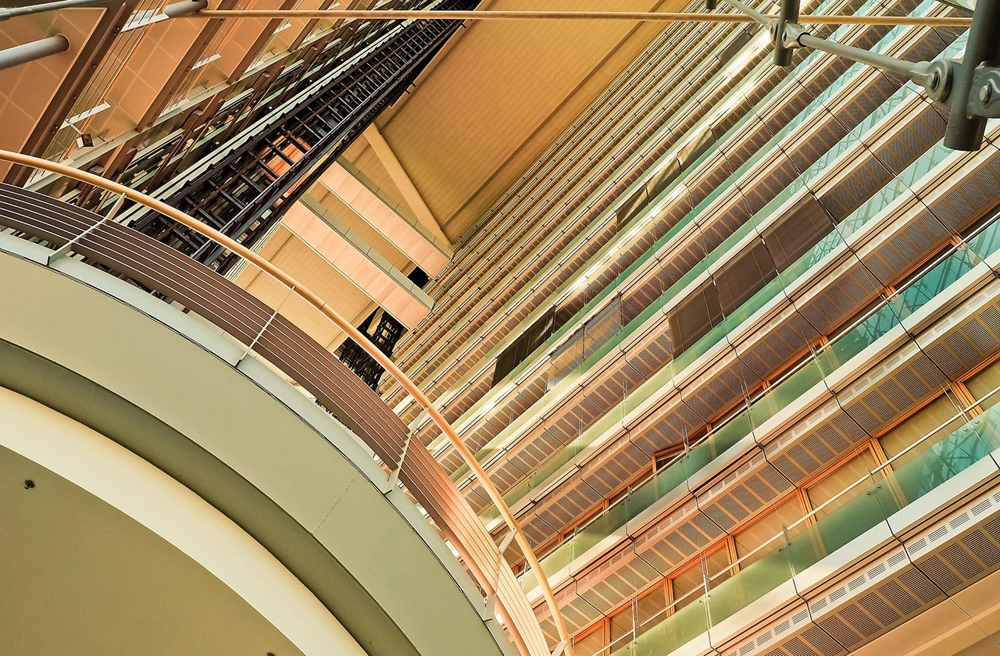

add_location品牌理念
「嶼行生活誌」以探索台灣島嶼之美，體驗旅行與生活的融合為核心理念，致力於推廣台灣本島各地的自然景觀、人文風情與慢活旅行文化。品牌名稱中的「嶼」象徵台灣這座充滿多元文化與自然景觀的島嶼；「行」代表旅行與探索的過程；而「生活誌」則表達將旅遊視為一種生活方式，透過記錄與分享，傳遞旅行帶來的感動與故事。品牌希望讓旅遊不只是短暫的觀光行程，而是一種深入在地文化、感受自然環境與體驗生活節奏的過程。
directions_car服務內容與網站特色
本網站致力於提供完整的台灣旅遊資訊，內容涵蓋各地熱門景點介紹、旅遊行程建議、住宿推薦及交通資訊，協助旅客輕鬆規劃旅程。同時整理各地特色美食與在地伴手禮，讓使用者能更深入了解台灣的文化與觀光特色。
此外，網站亦提供旅遊安全須知與住宿注意事項，幫助旅客在旅途中更加安心與便利。透過清楚的分類與簡潔的頁面設計，使用者能快速找到所需資訊，打造實用且友善的旅遊資訊平台。
call聯絡方式
若您對本網站內容、旅遊資訊或合作事宜有任何問題，歡迎透過以下方式與我們聯繫，我們將儘快為您提供協助與回覆。您的建議與回饋是我們持續提升網站內容與服務品質的重要參考。
聯絡信箱：service@travelwebsite.com
聯絡電話：02-1234-5678
服務時間：週一至週五 09:00－18:00
官方網站：www.travelwebsite.com
我們期待與您交流，並協助您規劃更完善且愉快的旅遊體驗。
credit_card優惠方案
1.早鳥優惠
提前30天完成旅遊行程或住宿預訂，即可享有早鳥專屬優惠，部分行程最高可享8折優惠，讓旅客以更優惠的價格提前規劃旅程。
2.信用卡優惠
與指定銀行合作，使用合作信用卡付款可享刷卡折扣、現金回饋或分期付款優惠，讓旅客在規劃旅遊時更加輕鬆便利。
3.淡季優惠
於旅遊淡季期間推出優惠方案，部分住宿或行程享有特別折扣，不僅價格更加實惠，也能避開人潮，享受更舒適的旅遊體驗。